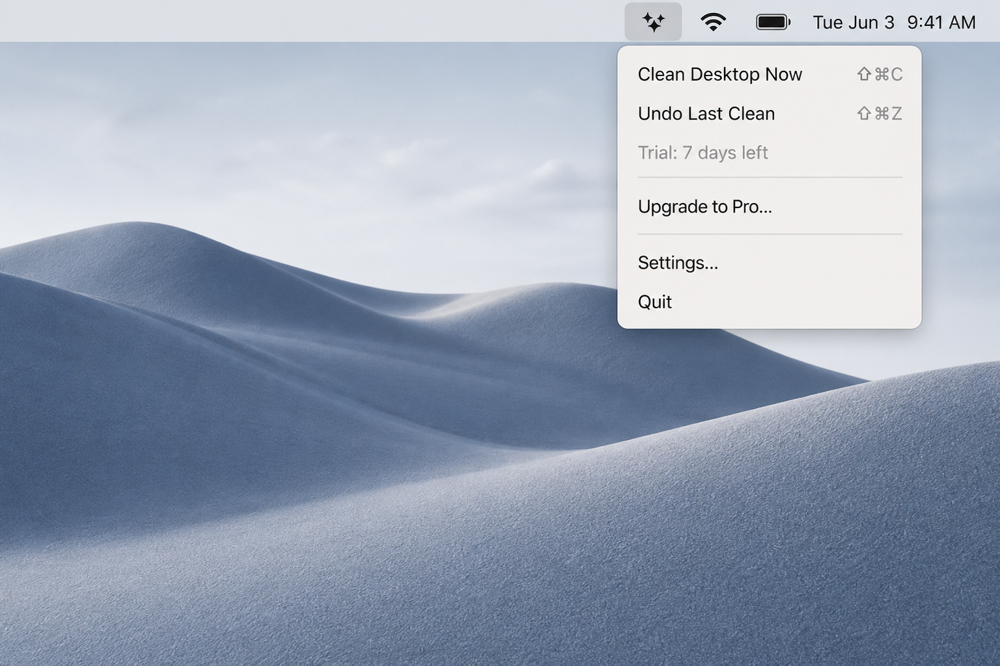

Now available for macOS
Cure your desktop clutter in one click.
DeskZen is a lightweight, menu-bar utility that instantly sweeps your messy screenshots and downloads into smartly organized archive folders.
7-day free trial. Requires macOS 14.0 or later. Universal for Apple Silicon & Intel.
